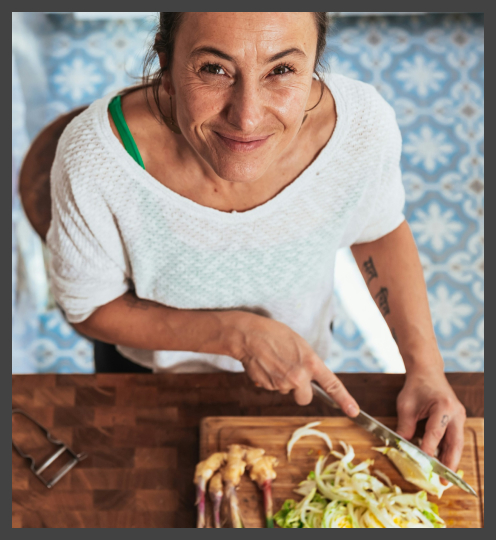

Grüne Genusswelt
Entdecke die Vielfalt der nachhaltigen Küche
Genieße köstliche pflanzliche Gerichte für eine gesunde Ernährung und einen nachhaltigen Lebensstil.
Neue Rezepte

Quinoa-Power-Bowl mit geröstetem Gemüse

Bunte Gemüsepfanne mit aromatischem Knoblauch-Dressing

Vegane Lasagne mit cremiger Cashew-Bechamel

Asiatische Bowl mit Teriyaki-Tofu und knackigem Gemüse

Über Uns
Leidenschaftliche Verfechter einer gesunden und nachhaltigen Ernährung
Wir glauben fest daran, dass veganes Essen nicht nur gut für unseren Körper, sondern auch für unseren Planeten ist. Unsere Mission ist es, Menschen zu inspirieren und zu unterstützen, köstliche vegane Gerichte zu entdecken und in ihren Alltag zu integrieren.
Bei Grüne Genußwelt findest du eine vielfältige Auswahl an einfachen und kreativen veganen Rezepten, die sowohl erfahrene Köche als auch Anfänger ansprechen. Von herzhaften Hauptgerichten über erfrischende Salate bis hin zu verlockenden Desserts - unsere Rezepte sind voller Geschmack und Gesundheit.
Indem wir tierische Produkte durch köstliche pflanzliche Alternativen ersetzen, tragen wir dazu bei, den ökologischen Fußabdruck zu verringern und eine nachhaltigere Zukunft für alle zu schaffen.